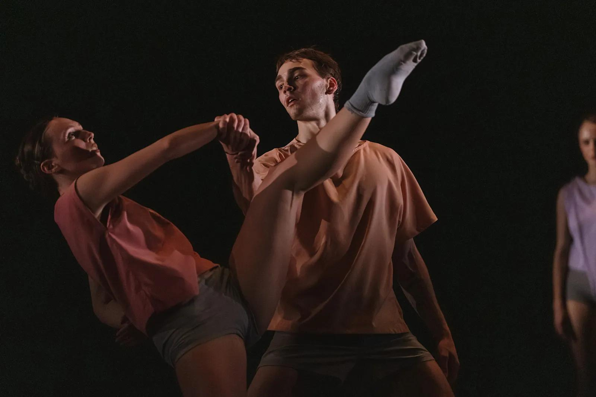
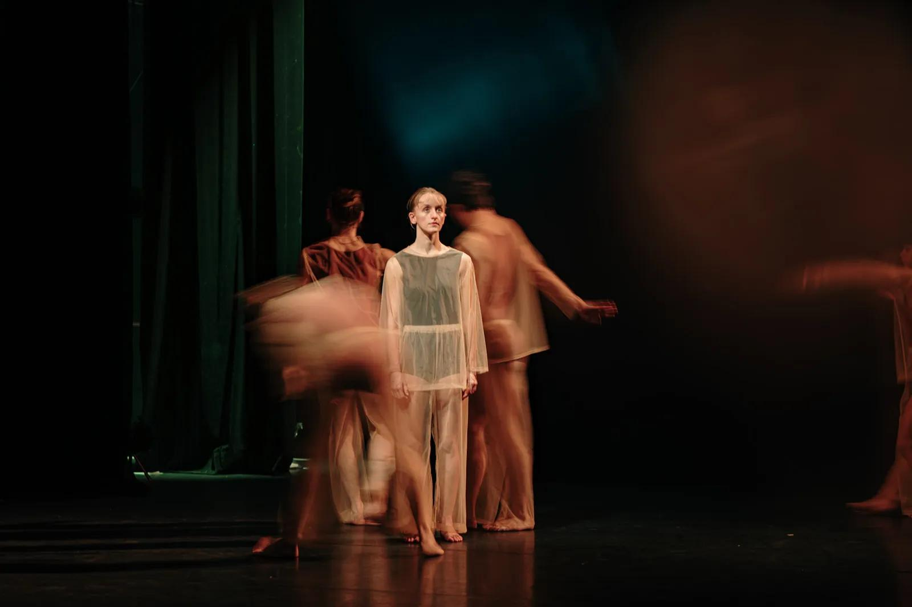

Spectacle de danse
Programme 25-26 du Jeune Ballet
Le carnet de danse
Ce spectacle est compose de quatre creations choregraphiques distinctes. L'objectif est d'explorer le rapport entre l'individu et le groupe a travers des styles tres varies. Le programme fait dialoguer le travail de quatre choregraphes: Adi Boutrous (approche organique), le Collectif ES (energie commune), Mathieu Guilhaumon (neoclassique) et Tania Carvalho (univers de l'inconscient). On peut voir cette soiree comme un veritable carnet de danse voyageant entre performance athletique et emotion pure.
Analyse des quatre actes

Acte 1 (Adi Boutrous)
Les danseurs (environ 12) portent des costumes aux couleurs neutres (vert sapin, bleu marine, gris, noir) en matiere fluide: des robes pour les filles et des ensembles pantalon/haut pour les garcons. Une forte unite se degage du groupe, meme si plusieurs actions se deroulent simultanement. Il n'y a pas de musique, seulement un son aigu par moments. La choregraphie est tres poetique avec des alternances de pauses et d'accelerations. C'est un acte tres acrobatique avec beaucoup de portes (rappelant l'acrosport). La sequence boucle deux fois, provoquant un ressenti d'etonnement et d'incomprehension. La lumiere est douce et dure environ 20-25 minutes.

Acte 2 (Collectif ES)
Le contraste est total avec des costumes de sport hyper colores. On denombre 15 a 16 interpretes qui evoluent de maniere individuelle ("chacun fait son truc"), creant un mouvement qui part dans tous les sens. La musique est tres dynamique, integrant des cris et des boucles musicales. On y retrouve beaucoup de references a la culture jeune (TikTok) et des expressions populaires (Tabarnac, Stop, Marseille bb). Au fil de l'acte, des pieces noires fluides avec des froufrous sont ajoutees aux costumes. La sequence boucle au moins 8 fois, avec des variantes a chaque passage. La lumiere est plus vive et l'acte dure egalement 20-25 minutes.

Acte 3 (Mathieu Guilhaumon)
Cet acte revient a un style ballet plus classique avec 6 danseurs maximum (3 filles et 3 garcons). Les costumes se composent de bas gris et de hauts pastels par binome. Les filles commencent en chaussures de ballet avant de passer en chaussettes. La choregraphie se deploie sur une musique au piano. La mise en scene joue enormement sur les jeux de lumiere et d'ombre, dans une ambiance generale plutot sombre. Certains danseurs restent parfois statiques et observent, tandis qu'un ou deux individus decrochent parfois du groupe.

Acte 4 (Tania Carvalho)
Le final commence au ralenti dans une ambiance tres reposante. Les costumes sont des habits longs transparents aux bras et aux jambes, avec des debardeurs et shorts rouges ou marrons dessous. Une fille en noir reste statique au centre tout le long, montant progressivement les mains dans la lumiere. Les autres danseurs traversent la scene en diagonale autour d'elle au ralenti, entrant chacun leur tour en differe (certains s'accelerent parfois). Apres etre tous sortis, ils rentrent a contre-sens en formant un groupe qui progresse comme une vague. D'un coup, la musique s'accelere brutalement, les mouvements passent a vitesse reelle et des cris eclatent (style hopital psychiatrique). Les danseurs portent des traces rouges ou noires sur la tete. Le chaos s'arrete net, la musique se coupe et tous sortent sauf la fille centrale qui redescend ses mains et finit par partir. La bande-son utilise des bruits de nature (eau, vent, oiseaux) avant la partie rapide.
Scenographie, lumieres et univers sonore
La scenographie du spectacle est marquee par un depouillement total: il n'y a pas de decors materiels sur le plateau. Tout l'espace est sculpte par la lumiere et la musique, qui creent l'identite de chaque acte.
L'espace sonore
La musique dicte le rythme et l'emotion. Dans l'acte 1, le choix du quasi-silence (ou d'un simple son aigu) force l'attention sur le souffle et le contact des corps. A l'inverse, l'acte 2 sature l'espace avec une musique dynamique, des boucles sonores et des cris, integrant des references tres actuelles (TikTok, expressions populaires). L'acte 3 apporte une rupture melancolique avec le piano, tandis que l'acte 4 propose un voyage sensoriel: il commence par des bruits de nature (eau, vent, oiseaux) avant de basculer dans une musique rapide et des cris de style hopital psychiatrique.
La lumiere comme decor
En l'absence d'objets, la lumiere sculpte le plateau. Elle est douce lors du premier acte pour accompagner la poesie des portes. Elle devient vive pour l'acte colore du Collectif ES, puis sombre avec de nombreux jeux d'ombres pour le ballet classique. Le final (acte 4) propose un veritable tableau visuel: un faisceau fixe eclaire la fille statique au centre, avant qu'une lumiere rouge ne vienne souligner l'acceleration brutale et l'angoisse des danseurs marques de traces noires.
Mon regard
Ce spectacle m'a marquee par sa capacite a passer d'une sobriete extreme a une saturation d'energie intense. J'ai ete particulierement touchee par le dernier acte: le contraste entre la lenteur initiale, tres reposante, et la rupture brutale avec les cris et les traces noires cree une emotion brute tres forte. Comme pour l'analyse du Petit Prince, j'ai retrouve ici une reflexion profonde sur la vulnerabilite humaine et la place de l'individu au sein du collectif.